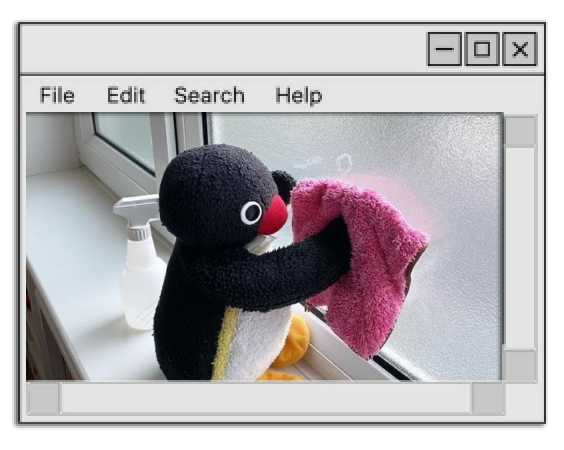

Home
i go by august, auggie, or my real name for close friends
i like coding (trying to atleast), swimming, 3d modeling, biking, cooking, and music
my favorite animals are bats and penguins
i dont like arguing with athiests, annoying people, and taylor swift
my proununs are he/him (by birth)
god is good!
my favorite show is dragon prince
my favorite food is sushi
im trying to learn css, html, and c sharp
my favorite song is This Side of Paradise by Coyote Theory :)
My best friends are: Ministeel, el_l33v, sumidk, frankie, saphy, and shroomy
:o :O :( :) xD xO xP :P :> 